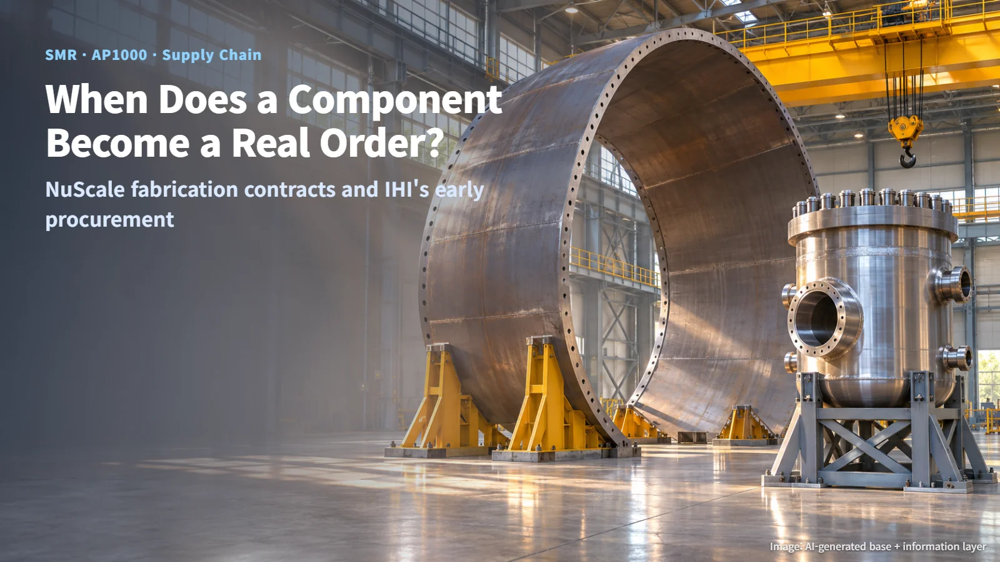
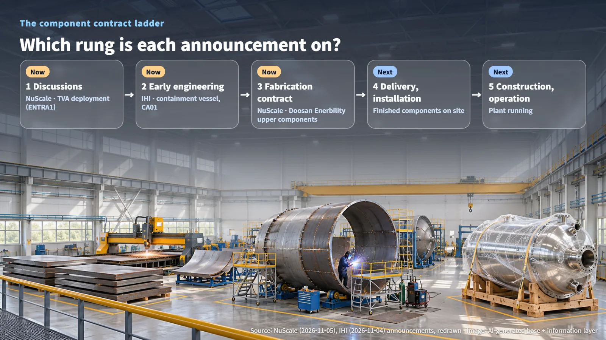
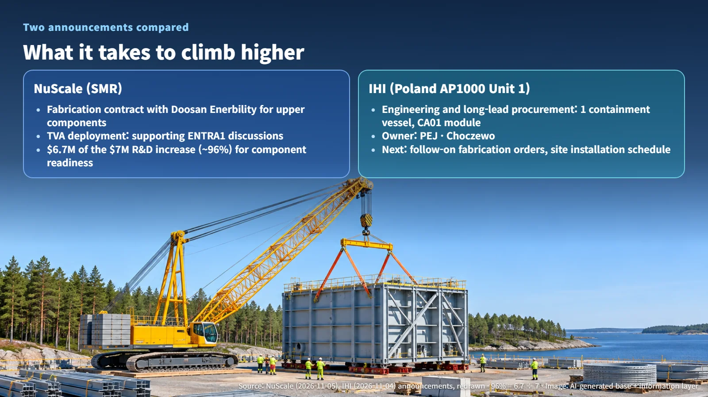

United States · Poland · Supply Chain
When Does a Nuclear Component Become a Real Order? NuScale's Fabrication Contracts and IHI's Early Procurement for Poland
NuScale's fabrication contracts and IHI's containment vessel award for Poland's first AP1000 sit on different rungs of the contract ladder.
Nuclear industry news is full of words like "discussions," "award" and "fabrication contract." They can sound interchangeable, yet a single component climbs several distinct steps between the factory floor and an operating power plant, and each announcement stands on one of those steps. This week brought two such announcements: NuScale's third-quarter results in the United States and IHI's equipment award for Poland's first nuclear plant. Let's place each one on the ladder.

Contracts Come in Stages: The Nuclear Component Contract Ladder
Drawn as a ladder, the path from an idea to a component that forms part of a working plant has five rungs:
1. Discussions: the customer and supplier talk through deploying a plant 2. Early engineering and procurement: engineering work begins and long-lead items are prepared in advance 3. Component fabrication contract: a manufacturer commits to building a specific part 4. Delivery and on-site installation of the finished item 5. Plant construction and operation
Each rung up fixes a wider scope of commitments. So when a "contract" headline appears, the quickest way to weigh it is to ask what exactly was promised, and how far that promise reaches. A massive steel component sitting on a factory floor becomes part of a power plant only after climbing this ladder all the way to the top.

NuScale: Fabrication Contracts Signed, Customer Deployment Still in Discussion
On November 5, NuScale reported its results and business progress for the third quarter ended September 30. At quarter end, its cash and cash equivalents together with short- and long-term investments totaled $1.9 billion, a figure the company presented as the financial foundation for commercialization readiness and supply chain investment.
On the component side, NuScale stands on the third rung. It has signed a fabrication contract with Doosan Enerbility for upper components of the reactor coolant system (the system through which the water carrying heat away from the reactor flows), and it is moving forward with MillenniTEK on fabricating first-of-a-kind safety components. That marks a shift from design development to fabrication readiness; delivery of completed modules and the start of plant construction and operation sit on the rungs above.
On the customer side, NuScale is on the first rung. It continues to support ENTRA1's discussions with TVA on deploying nuclear plants, and no binding purchase agreement from a customer has been announced yet. The supply chain is moving first while customer discussions continue.
One number captures this pattern well. Research and development spending rose by $7 million from the same quarter a year earlier, and $6.7 million of that increase relates to component technology readiness (how prepared a part is for actual fabrication and use) and design maturity. Dividing $6.7 million by $7 million gives roughly 96%. In other words, nearly all of the added R&D spending went toward getting components ready to be built. The company also said it has introduced nuclear-specific AI tools, developed with Nuclearn and NPX, into its engineering and knowledge management work to help teams make better use of design information and institutional knowledge.
IHI: Early Engineering and Procurement for a Containment Vessel and the CA01 Module
On November 4, IHI announced it had been awarded engineering and long-lead procurement for one containment vessel and the large structural steel module package CA01 for Unit 1 of Poland's new AP1000 plant. The project is the country's first nuclear power plant, being developed by state-owned PEJ in the Choczewo area in northern Poland.
A containment vessel is a huge steel shell that encloses the reactor and its major systems. The reactor vessel, the pressure vessel holding the nuclear fuel, is a separate piece of equipment located inside it; this award covers the outer shell, the containment vessel. CA01 is a large structural steel module inside the reactor building that supports major equipment and makes on-site construction more efficient.
Long-lead items are things such as large forgings and specialty steel that take a long time to produce. Much as a large event calls for booking the venue and ordering specialty supplies well ahead of the date, preparing these items early lets manufacturing capacity and material procurement line up with the main construction schedule. The long-lead procurement for Poland's AP1000 covered here in October now extends to two new items: the containment vessel and CA01.
On the ladder, this award sits on the second rung. The contract value, detailed delivery dates and the scope of follow-on fabrication have not been disclosed, and on-site delivery of the finished items and the overall construction contract are the next steps. IHI plans to draw on its experience supplying reactor vessels and containment vessels, along with its welding and quality control capabilities. The award is an equipment procurement milestone moving on its own track, separate from the permit application for early site works.
What to Watch for the Next Rung
Placed side by side, the two announcements have different shapes. NuScale's component fabrication is on the third rung while its customer contracting is on the first, so the supply chain is running ahead of the customer. IHI's equipment procurement for the project owner's plant starts on the second rung.

Each needs something specific to climb higher. For NuScale, the key questions are whether the TVA and ENTRA1 discussions turn into a binding purchase agreement and whether further component fabrication milestones are announced. For IHI, the next checkpoints are follow-up announcements on contract scope, suppliers and long-lead materials, follow-on production orders, and whether the on-site installation schedule fits together with the design and quality assurance plans.
The day a giant containment vessel is raised into place at the reactor building will come after each of these questions has been answered. The next time you see a "nuclear contract" headline, a good first step is to ask which rung of the ladder it stands on.